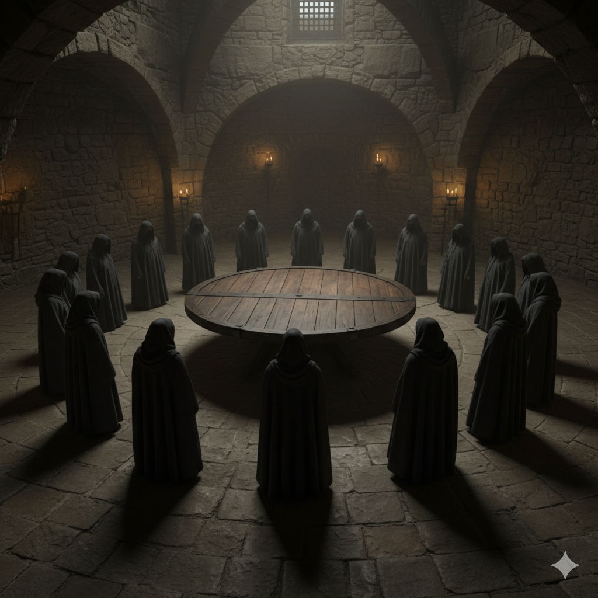

irony

As I slowly came around, my head was pounding. I opened my eyes and saw people in black cloaks standing around me in a circle. I tried to get up from what I guessed was a table, but my hands and feet were tied to it.
"Just great," I growled.
I looked at the person standing near my feet and said groggily, "Where am I? What's going on?"
The voice under the hood answered, "You are our human sacrifice to the great warrior Ash. She is our great protector."
I blinked. "Ash? She?"
I grew up with Ash about 900 years ago. He isn’t a she — he’s a he. He was always really hot, and I had a crush on him… still do, if I’m honest. Oh yeah, I forgot to mention — I’m a god too. Immortal, of course.
Then I noticed the symbol hanging around the leader’s neck: a simple circle with two horns. It was from a cult I created about a century ago… as a joke! Seriously, the stuff I land in.
I said to the leader, "Let me go, or I’ll summon him."
The voice scoffed, "Him? How?"
"Your god — Ash. He’s an old childhood friend."
The group laughed. One on my left sneered, "She is a goddess, not a god. And why would a low-level servant like you even know her — never mind be her BFF?"
I shouted, "Ash!"
He popped up, standing on my right side.
"What the hell is the racket for, H?"
My name’s Hellen, so Ash often calls me H.
Everyone in the circle dropped to their knees and started worshipping him.
"Ash, you do realize they thought you were a goddess, right? Not a god?" I asked.
He shrugged. "I let it stand. Couldn't be bothered to correct it."
I shook my head, smiling. He looked at me, confused.
"Why are you tied to a table? Not that I don’t like the sight."
"Except for my usual reasons?" I teased.
He rolled his eyes. "Get your mind out of the gutter, H."
"Pot calling kettle black. I’m tied to a table because your cult decided to kidnap me for their next sacrifice," I said.
"Let’s get these ropes off you — however much I prefer them on you."
He snapped his fingers. The ropes untied themselves, and I sat up.
"Great. Now I’m horny."
The leader of the cult spoke up, "Ash, please accept our deepest apologies for thinking you were a goddess and not a god — and for nearly killing your friend."
Ash laughed. "You’d have had quite a time trying. She’s immortal. You would’ve been shocked watching her come back to life and pull the dagger out of her own heart."
He turned to me. "Shall we go then, H?"
"Okay," I said, and we walked out the door, leaving the cult behind — bewildered.
Outside, he turned to me. "You have to stop playing pranks. It’s been going on for 900 years."
"Never," I replied.
"That’s why I love you." he said cupping my face
I gasped. He what? He wrapped an arm around my waist, and pulled me closer. Sloly leaning in giving me time to say no if i wanted to. Then he kissed me.
I melted into his arms, kissing him back hungrily. knowing I’d really loved him for centuries.
back to home